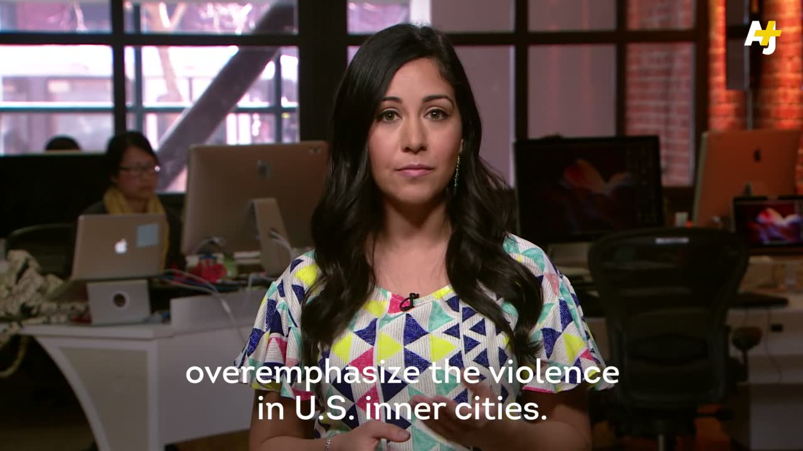
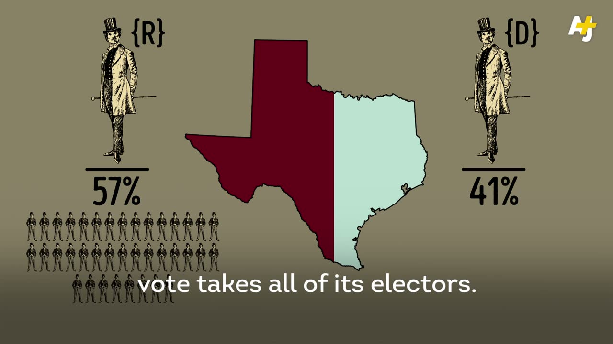
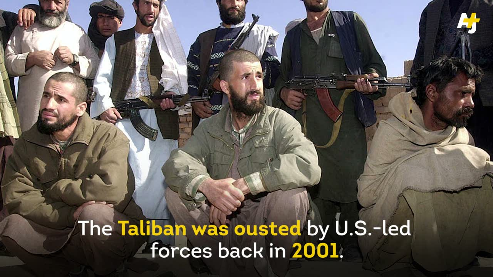
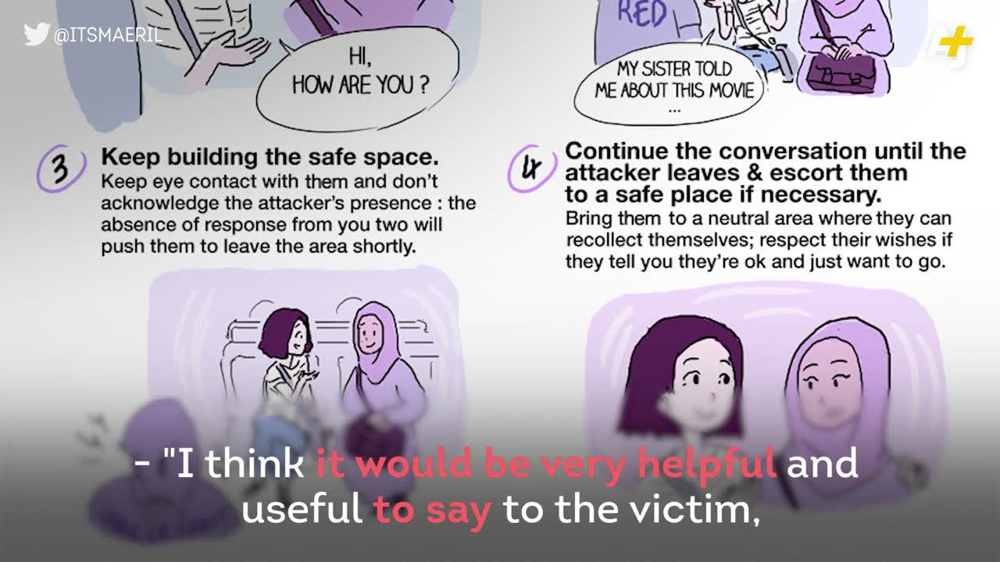
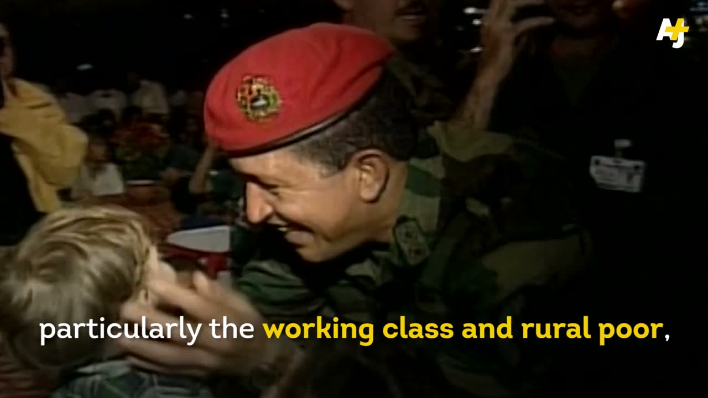
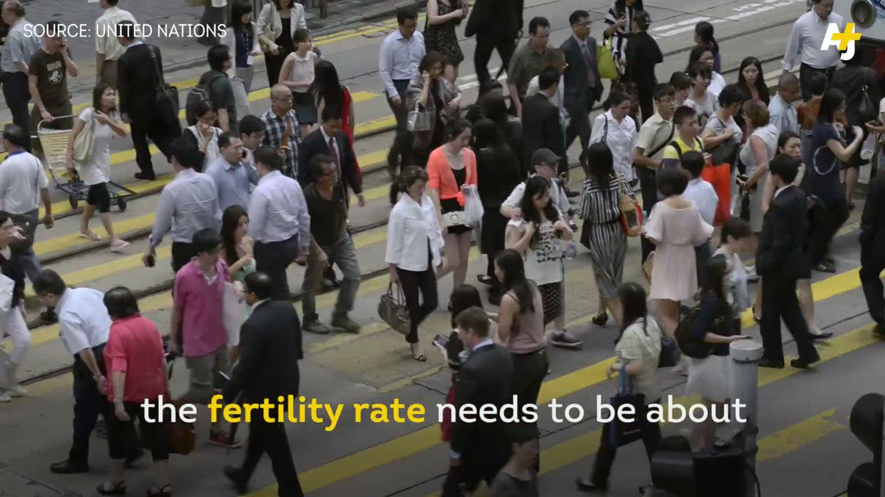
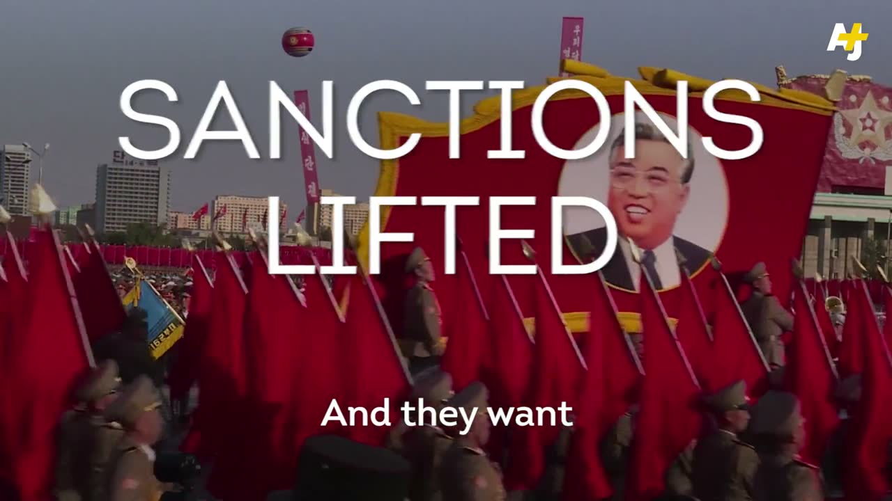
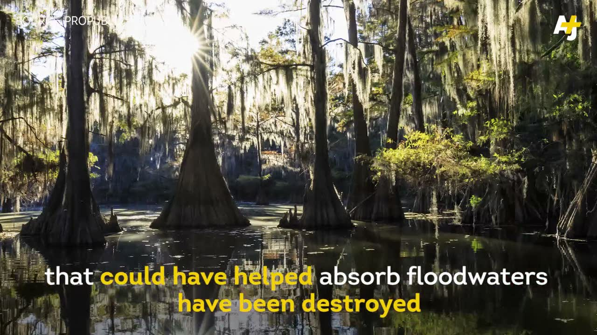

00
Sixteen years of production, from live global broadcast to viral social to AI-native pipelines. The archive opens in 2010; the 2007 newsroom origin before it lives on the timeline. Filter by outlet or era, or start with the pieces that explain the whole arc.


Social Videos & Explainers
22 pieces Short-form journalism and explainers, produced to platform spec






